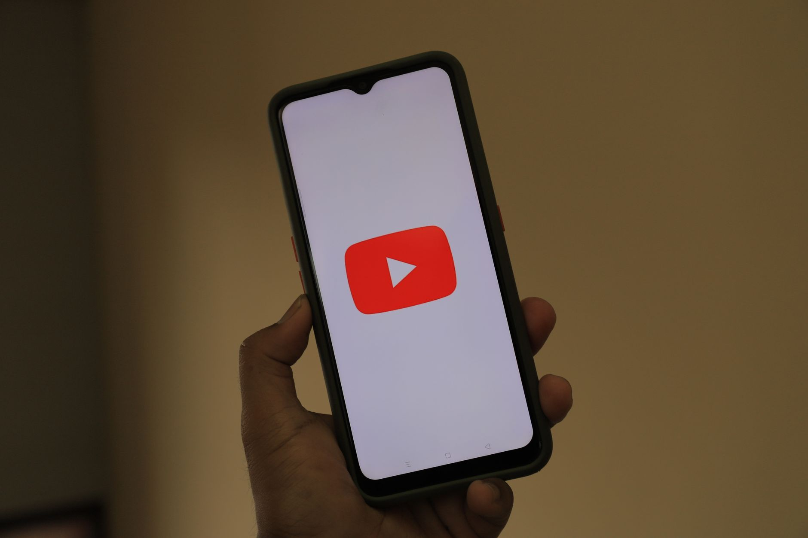

Are you a small business owner wondering if YouTube is worth the time and investment? Let’s be honest, social media can feel overwhelming. You’re juggling customers, managing inventory, and trying to grow your business - the last thing you want is another platform to learn. The good news is, YouTube offers a unique opportunity to connect with local customers in a way that many other channels simply can’t. This post will break down whether YouTube marketing is a worthwhile investment for your local business, covering everything from setup costs to measuring your results. We’ll show you how to reach your community, create engaging content, and ultimately, drive more business your way.

YouTube Channel Setup & Tools: The Initial Investment
Starting a YouTube channel doesn’t require a massive upfront investment. The good news is, it’s surprisingly affordable. You'll need a Google account - which you likely already have - and a smartphone or webcam to record videos. Editing software can range from free options like DaVinci Resolve to paid tools like Adobe Premiere Pro. A decent microphone is a worthwhile investment; audio quality is critical. Consider starting with around $100 for basic equipment - a good microphone and editing software - and you're good to go. More advanced features, like professional lighting or a dedicated editing workspace, can be added later. Don’t feel pressured to buy everything at once. You can start simple and scale up as your channel grows. The biggest cost is your time, which is an investment you’re already making in your business.
Reaching Local Viewers Through YouTube: Location, Location, Location
YouTube’s algorithm is remarkably good at surfacing content relevant to a viewer’s location. This is huge for local businesses. When you upload a video, be sure to add your business’s location to the video details. YouTube will then prioritize your video for viewers in your area. Also, create videos about your local community. Highlight local events, feature other local businesses, or share tips about your neighborhood. This signals to YouTube that your content is relevant to local viewers. You can also use YouTube’s location targeting features to specifically reach viewers in a particular city or region. Research shows that 68% of YouTube viewers use the platform to discover local businesses. [Source: YouTube Creator Blog]

Content Strategy for Local Businesses: What to Film
What should you actually film? Forget polished, professional productions - authenticity is key. Start with videos that solve a problem for your local customers. Here are some ideas:
- Behind-the-Scenes Tours: Show viewers what it’s like to work at your business.
- How-To Videos: Teach viewers how to do something related to your products or services. For example, a bakery could demonstrate how to frost a cake.
- Customer Testimonials: Feature happy customers sharing their experiences.
- Local Event Coverage: Document local events and showcase your business’s involvement.
- Product Demos: Showcase your products in action.
- Q&A Sessions: Answer common questions from your customers.
Aim for videos that are 2-5 minutes long. YouTube analytics will help you determine which types of content resonate most with your audience. Consistency is also key. Try to upload a new video at least once a week.
YouTube SEO for Local Search Visibility: Getting Found
YouTube isn’t just a video platform; it’s a search engine. Just like Google, YouTube uses algorithms to determine which videos to show to viewers. To improve your video’s visibility, you need to optimize it for search. Here’s how:
- Keyword Research: Identify the keywords that your local customers are using to search for businesses like yours. Use tools like Google Keyword Planner to find relevant keywords.
- Video Title: Include your primary keyword in your video title.
- Video Description: Write a detailed description that includes your primary keyword and relevant secondary keywords. Include a call to action, such as “Visit our website” or “Call us today.”
- Tags: Add relevant tags to your video.
- Closed Captions: Adding closed captions improves accessibility and can also boost your video’s SEO. YouTube’s auto-generated captions aren’t always accurate, so consider creating your own.
According to a recent study, 76% of YouTube viewers use the platform to research products and services before making a purchase. [Source: HubSpot]
Measuring YouTube Performance for Local Results: What Matters
You can’t improve what you don’t measure. YouTube Analytics provides valuable data about your video’s performance. Pay attention to these metrics:
- Views: The number of times your video has been watched.
- Watch Time: The total amount of time viewers have spent watching your video. This is a critical metric.
- Audience Retention: The percentage of viewers who watched your video from beginning to end.
- Engagement: The number of likes, dislikes, comments, and shares your video has received.
Analyze your data to see which videos are performing well and which ones aren’t. Use this information to inform your future content strategy. You’ll want to focus on videos that have high watch time and engagement. A good rule of thumb is to aim for an average watch time of at least 50% of your video’s length.
Benefits of YouTube Marketing for Local Companies: Why it Works
YouTube offers several benefits for local businesses that traditional marketing channels often can’t match. First, it’s incredibly cost-effective. You can start a channel for free and only pay for equipment and software as needed. Second, it allows you to connect with your local community in a personal and engaging way. Third, it’s a powerful tool for driving traffic to your website and generating leads. Finally, YouTube’s local search algorithm ensures that your videos are seen by the people who are most likely to become your customers. A recent survey found that 62% of consumers say they’re more likely to buy from a business they’ve seen on YouTube. [Source: Wyzowl]
Potential Drawbacks & Challenges of YouTube for Local Brands: Be Realistic
YouTube marketing isn’t without its challenges. It can take time and effort to build a following and create engaging content. Competition is also fierce. There are millions of videos on YouTube, so it can be difficult to stand out from the crowd. Also, YouTube’s algorithm is constantly changing, which can make it difficult to predict how your videos will perform. However, with a strategic approach and consistent effort, you can overcome these challenges and reap the rewards of YouTube marketing. Don’t expect overnight success; building a YouTube channel is a marathon, not a sprint.
YouTube vs. Other Local Marketing Channels: A Comparison
Let’s compare YouTube to other local marketing channels:
- Google Business Profile: Great for local search visibility, but limited in terms of content. YouTube offers more opportunities for engaging content.
- Facebook: Good for reaching a broad audience, but can be difficult to stand out. YouTube allows for deeper engagement.
- Local SEO: Important for driving traffic to your website, but doesn’t provide the same level of engagement as YouTube.
- Print Advertising: Expensive and difficult to track results. YouTube offers a more measurable ROI.
YouTube offers a unique combination of reach, engagement, and measurability that makes it a valuable addition to any local business’s marketing strategy. The average cost per click on YouTube advertising is 2.70 dollars, significantly lower than Google Ads at 4.54 dollars. [Source: WordStream]
Is YouTube a Worthwhile Investment for Your Business?
Ultimately, whether YouTube is worth the investment depends on your specific business goals and resources. If you’re looking to connect with your local community, drive traffic to your website, and generate leads, then YouTube is definitely worth considering. It’s a relatively low-cost, high-impact marketing channel that can deliver significant results. Starting a YouTube channel is a commitment, but the potential rewards are well worth the effort. Don't let the perceived complexity scare you off. Start small, experiment with different types of content, and track your results.
Ready to start building your YouTube presence and connecting with local customers? Start by filming a simple "About Us" video showcasing your business and team. Then, research a few local keywords and create a video that addresses a common question or problem your customers have. Don’t wait - start building your YouTube channel today!
Related
- Short Form Video For Local Business Complete Guide
- Evergreen Content Ideas For Small Business Website
- How Often Should a Small Business Blog?
Read next: Short Form Video For Local Business Complete Guide